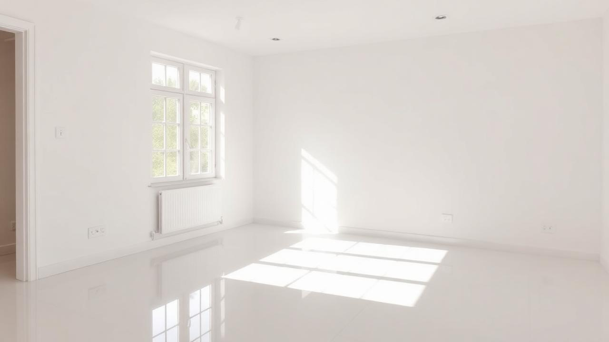
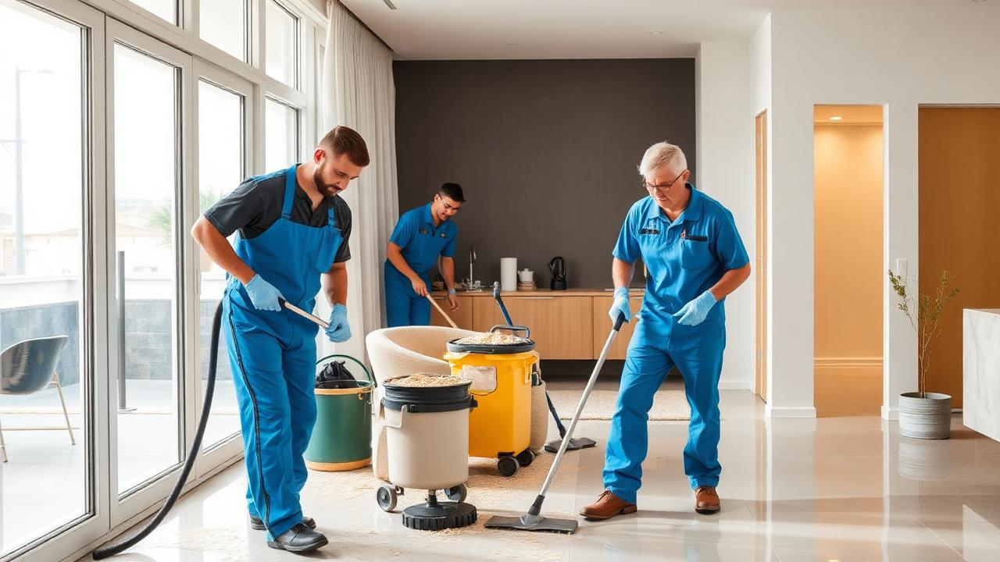
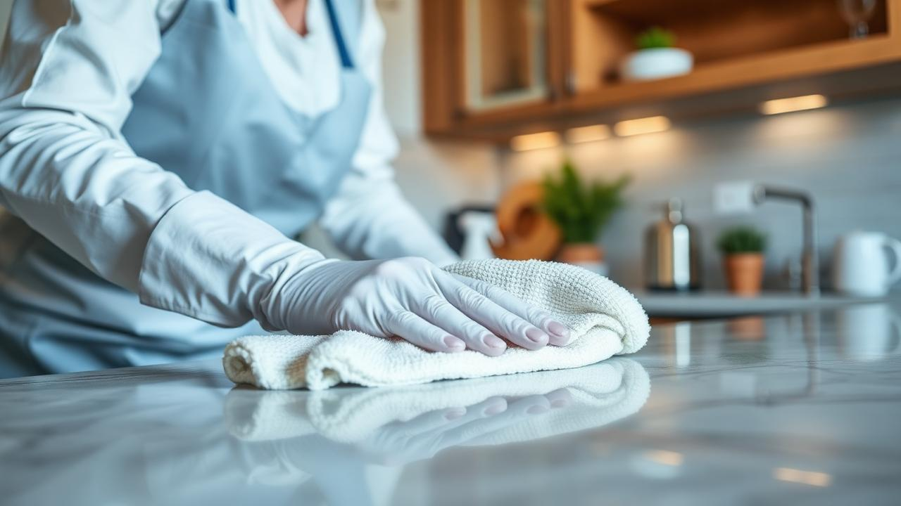
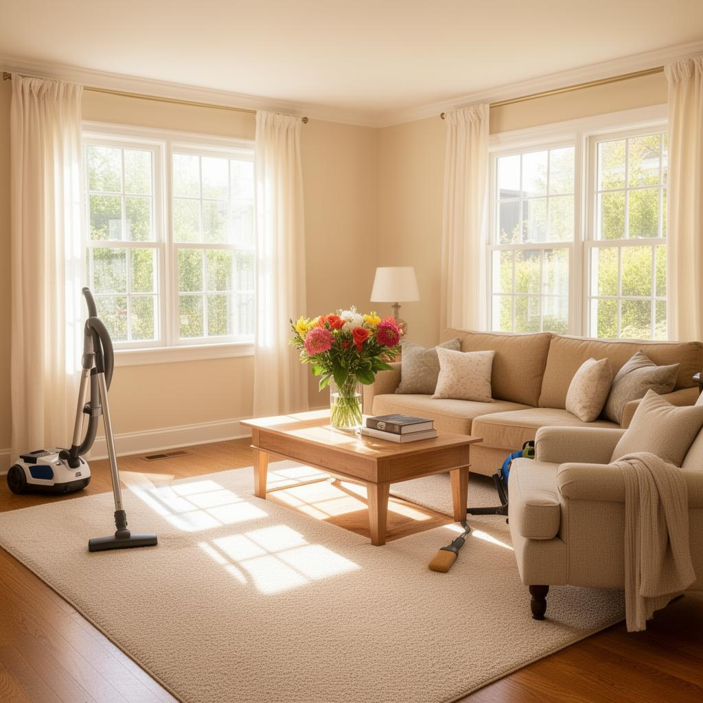
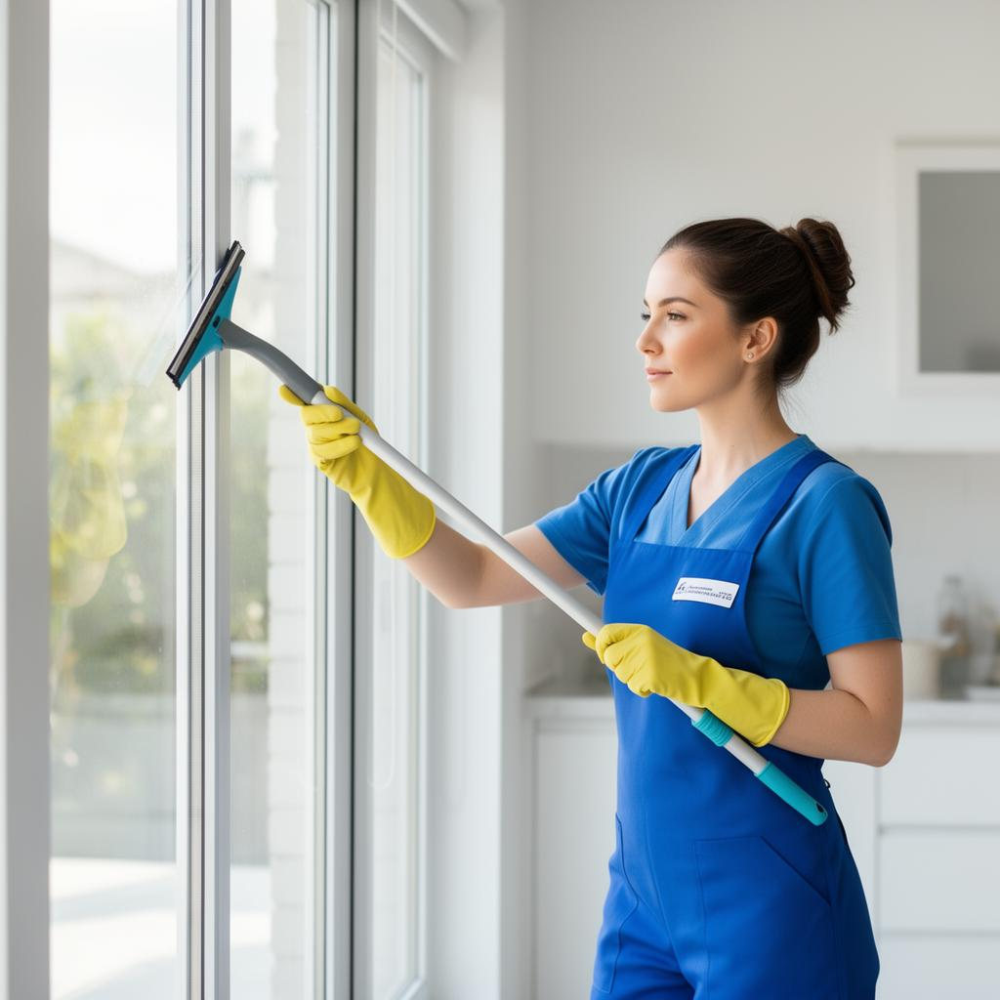

Nettoyage après rénovations et avant ou après déménagement. Transition fluide vers votre prochaine étape, à Lévis et Québec.
Contactez-nousChez Pro-Clean HC Inc à Québec, nous offrons bien plus que de l'entretien ménager standard. Nos services spécialisés de nettoyage après rénovations et avant ou après déménagement assurent une transition fluide vers votre prochaine étape.
Libérez-vous des contraintes et profitez d'un espace impeccablement propre, prêt à accueillir un nouveau chapitre de votre vie. Que ce soit pour une propriété résidentielle ou commerciale, notre équipe s'adapte à vos besoins spécifiques.
Nous comprenons que ces moments de transition sont souvent stressants. C'est pourquoi nous prenons en charge l'ensemble du nettoyage pour que vous puissiez vous concentrer sur ce qui compte vraiment.

Après avoir transformé votre espace, ne laissez pas la poussière et les débris éclipser la beauté de vos améliorations.



Que vous tourniez une page ou en commenciez une nouvelle, notre service de ménage crée l'environnement parfait pour accueillir cette transition.
Avant d'arriver dans votre nouveau foyer, ou après avoir quitté l'ancien, nous assurons que chaque recoin reflète propreté et fraîcheur. Un espace propre est le meilleur cadeau que vous puissiez vous offrir lors d'un déménagement.
Les travaux de rénovation génèrent une quantité importante de poussière fine qui s'infiltre dans les moindres recoins de votre propriété. Cette poussière de construction contient souvent des particules de plâtre, de bois et de composés chimiques qui peuvent irriter les voies respiratoires et provoquer des allergies.
Un nettoyage professionnel après rénovation ne se limite pas à un simple coup de balai. Il implique l'utilisation d'aspirateurs industriels avec filtres HEPA, de produits dégraissants adaptés aux résidus de construction, et de techniques spécifiques pour protéger vos nouvelles surfaces tout en éliminant chaque trace de travaux.
Après la fin des travaux de rénovation majeurs ou mineurs, après une construction neuve, lors de la réfection de planchers, après des travaux de peinture, ou suite à l'installation de nouvelles armoires de cuisine. Plus tôt vous nettoyez après les travaux, plus facile sera l'élimination des résidus.
Au Québec, les propriétaires et locataires sont tenus de remettre un logement en état de propreté acceptable lors du départ. Un ménage professionnel de fin de bail vous assure de récupérer votre dépôt de garantie et d'éviter toute friction avec votre ancien propriétaire.
Pour ceux qui emménagent dans un nouveau logement, un nettoyage en profondeur avant l'installation garantit un environnement sain et hygiénique pour votre famille. C'est l'occasion de désinfecter toutes les surfaces de contact, de nettoyer l'intérieur des armoires où vous rangerez vos effets personnels, et de partir sur des bases propres.
Basés à Lévis, nous desservons toute la Rive-Sud et la grande région de Québec, incluant Beauport, Charlesbourg, Sainte-Foy, Cap-Rouge, Saint-Romuald, Saint-Nicolas et les environs. Notre connaissance du marché immobilier local nous permet d'offrir un service parfaitement adapté aux exigences des propriétaires et gestionnaires de la région.
Que ce soit pour effacer les traces du passé ou préparer un nouveau départ, notre équipe adapte ses méthodes pour répondre parfaitement à vos besoins. Faites de votre espace un lieu accueillant, sain et prêt à vivre, sans l'encombrement d'hier.
Chaque projet est unique. Nous effectuons une évaluation gratuite de vos besoins avant de commencer, afin de vous proposer un plan de nettoyage personnalisé et un prix transparent, sans surprise.

Formés pour le nettoyage post-rénovation et les transitions immobilières.
Solutions écologiques adaptées à chaque type de surface et de résidu.
Personnel expérimenté, ponctuel et respectueux de votre propriété.
Service d'urgence disponible pour les transitions pressantes.
Faites confiance à Pro-Clean HC INC pour un nouveau départ impeccable. Nettoyage après rénovation ou déménagement — soumission gratuite et sans engagement.
Contactez-nous